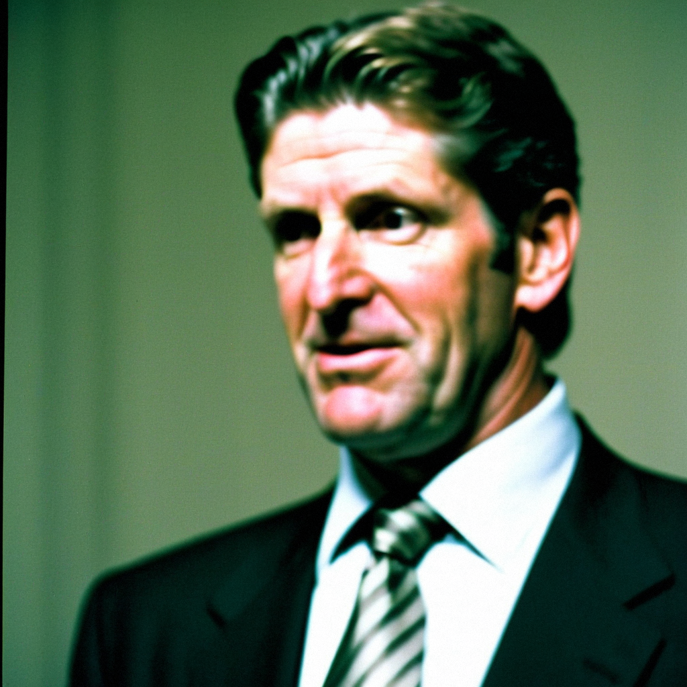

Babcock on a room that cannot win on the road: 'We have to be a better traveling team'
The Ducks are 3-12 away from home and in the middle of a 2-6-2 stretch; their coach talks about travel, the line changes, and why he still trusts Jean-Sebastien Giguere.
 Jan KowalczykRinkside reporter and studio host · The Tunnel
Jan KowalczykRinkside reporter and studio host · The Tunnel
4:26 · synthetic voices, produced from the record · download
 Mighty Ducks of Anaheim head coach Mike Babcock sat down in the dressing room at the Arrowhead Pond before Tuesday morning skate, a day before
Mighty Ducks of Anaheim head coach Mike Babcock sat down in the dressing room at the Arrowhead Pond before Tuesday morning skate, a day before  Nashville Predators visits. The Ducks are 11-10-6 through 27 games, on a two-game losing streak that includes a 4-3 overtime defeat at
Nashville Predators visits. The Ducks are 11-10-6 through 27 games, on a two-game losing streak that includes a 4-3 overtime defeat at  Buffalo Sabres on Saturday, and they carry a 3-12 record on the road.
Buffalo Sabres on Saturday, and they carry a 3-12 record on the road.
Transcript
Jan Kowalczyk here with Mike Babcock, morning skate done, a day before Nashville comes in. Mike, Saturday night in Buffalo, you're up, you get the 4-3 in overtime. Walk me through what you saw on the bench.
Well, you know, we had our chances. We were, I mean, the second period we were flat, we didn't have our legs and they scored two quick ones. And then in the third we got back to it, we got one, we got the equalizer. And in overtime, obviously, it could go either way. They got a puck to the net and, uh, we didn't handle it. That's the game.
You're 3-12 on the road. That's the lowest in the league by some distance. What is happening when you leave this building?
You know, I think you've got to own it as a coaching staff, right? We've got to do a better job getting those guys ready when they're on the road. It's, uh, you get here, you're in your building, you know the ice, you know the sight lines. On the road, the details matter more. And we haven't paid attention to the details enough. We've been outscored 37 to 29 in our last ten and most of those, you look at the games, we're not getting outscored because the other team is better. We're getting outscored because we're taking ourselves out of games.
You made changes after that game. Erik Cole up to center on the second line, Joel Kwiatkowski in the lineup, Matthew Stajan in. Vaclav Prospal is out, obviously, that foot. Talk me through the logic there.
Well, Vaclav's out, you know, until, what, the second week of January? So that's, that's a big hole on the left side. Erik had six points in five games, you can't ignore that. And he's played center before, so we're trying him there. Kwiatkowski, he's a young guy, he's earned a look. And Matthew, Matthew is twenty, he's going to make mistakes, but he's a guy who's going to be part of this in a few years. So you put him in. That's your job.
You mentioned the age of the room. Thirty-one men, average age 28.0. You've got five guys 24 or under. Is this, in your view, a young team right now, or do you look at Fedorov at 34 and you say, 'No, we've got veterans'?
Well, you've got Sergei, he's 34 and he's got 26 goals. He's 34 going on 25, you know. But yeah, the room is younger than people think. We've got guys like Tuomas Lydman, he's 20, he's playing. Stajan's 20. Mike Mottau, he's 26 and he's playing 20 minutes. And the thing is, on the road, you're asking those young guys to be the ones who set the tone, because the veterans aren't carrying you the same way when they're, when the bus ride was long and you didn't sleep. So it falls on the younger guys to bring the compete level. And sometimes they do. Sometimes they don't. That's the, you know, that's the price of building with some youth.
Let me ask you about the net. Giguere is 10 and 13. He's played 24 of your 27 games. Martin Gerber is 1 and 3. Are you a one-goalie team right now?
Jean-Sebastien is our guy. 10 and 13, you know, that's not a record that, you look at the numbers, that's not his fault. He's our starter. I'm not going to get into this, I've answered it before, I'll answer it again if you want, but he's our number one. We've got to score more around him. We've got to give him more of a cushion. That's, that's the coaching staff's problem, not his.
You took them to the Final in '03, you're in your third year here. Do you look at this room and say, 'The players are buying in, it's a matter of execution,' or is there a belief issue when you're losing like this?
Well, look, if you don't have belief, you don't come back from two down in the third in Buffalo. So the belief is there. What we lack is consistency. We're not a team that can play 60 minutes for, you know, four nights in a row. We'll get two good periods, we'll have a stretch where we're flat. And the teams in this league, they punish you. Every night. So it's a matter of finding the way to make it 60 minutes every night. That's structure, that's details, that's compete level. And that's on me.
Tomorrow you get Nashville at home. You're 8 and 4 here, you've lost the last one at home to them, 5-2 on Saturday. What has to be different?
Everything. No, look, we've got to come out and compete from the opening faceoff. We can't let them get that early lead. Nashville's a good team, they're 11 and 8 and 4, they're in a playoff spot. And they've got a good group up front. But at home, you know, we're 8 and 4. We've got to make this building a fortress. That's the goal. That's the only thing we can control tonight.
One more, Mike. Vitali Vishnevski, he's back around the 26th. That's your top right defenseman when he's in. How much are you missing him in this stretch?
Yeah, he's big. He's 6'4", he eats up minutes, and he's, he's a stay-at-home guy who lets the others be creative. Without him, we're asking Aki Berg and Niclas Havelid to play more minutes than they'd like. So yeah, we'll be glad to have him. But, you know, the guys who are in are playing, and we're going to find a way.
Mike Babcock, head coach of the Mighty Ducks. Appreciate your time, back to you.